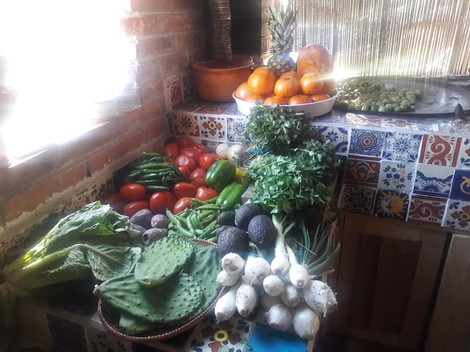
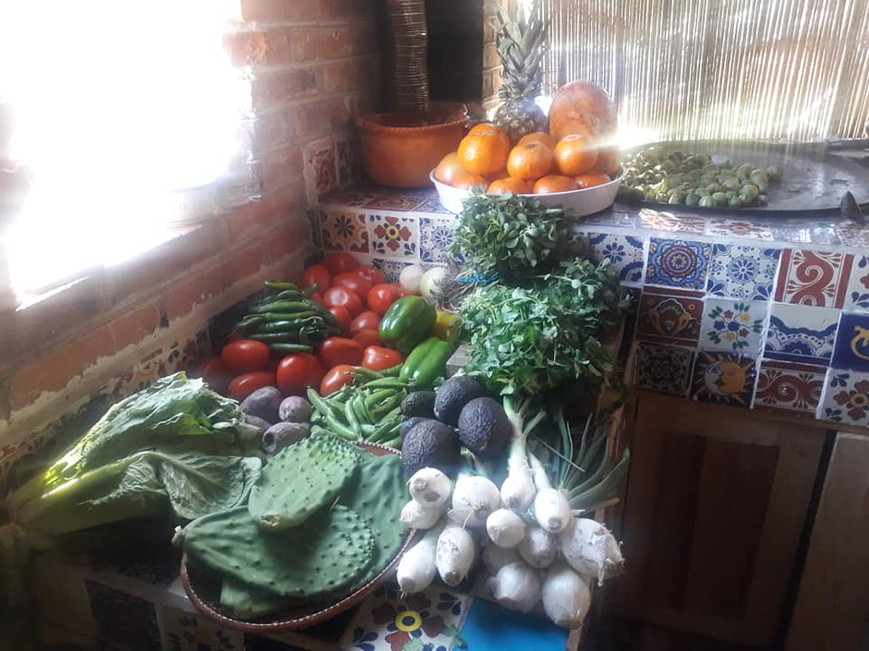
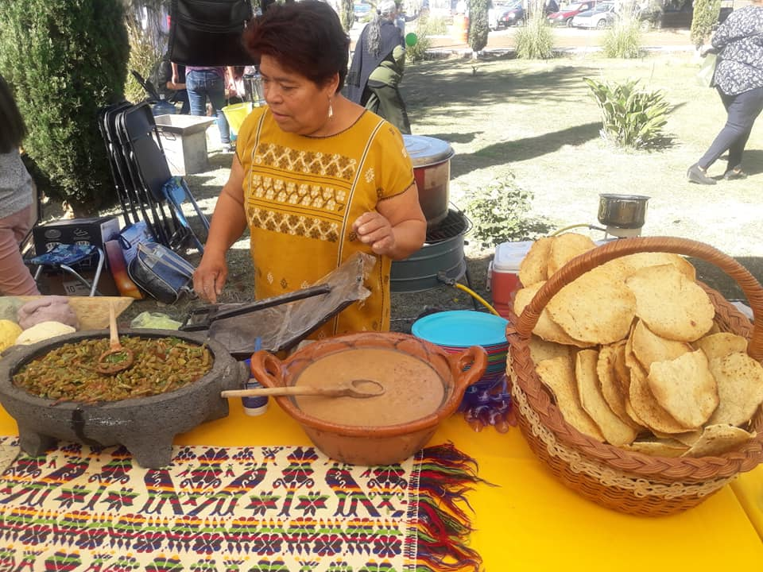
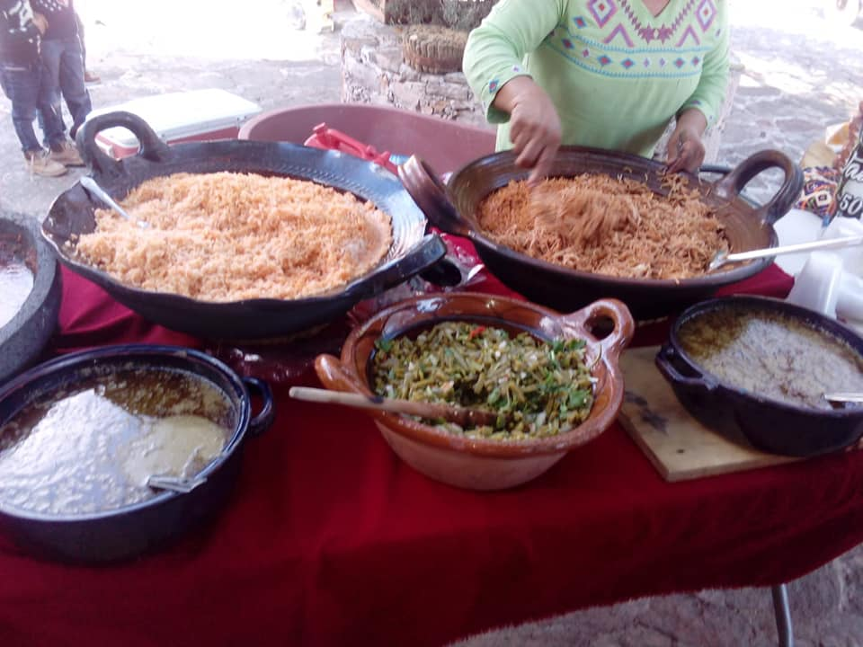
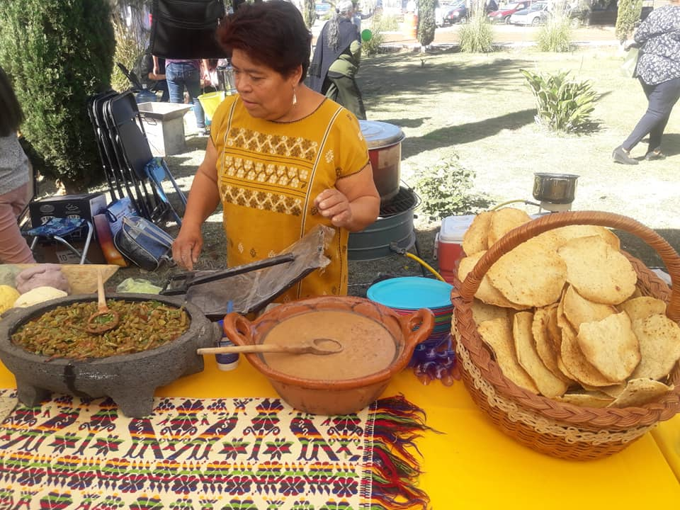
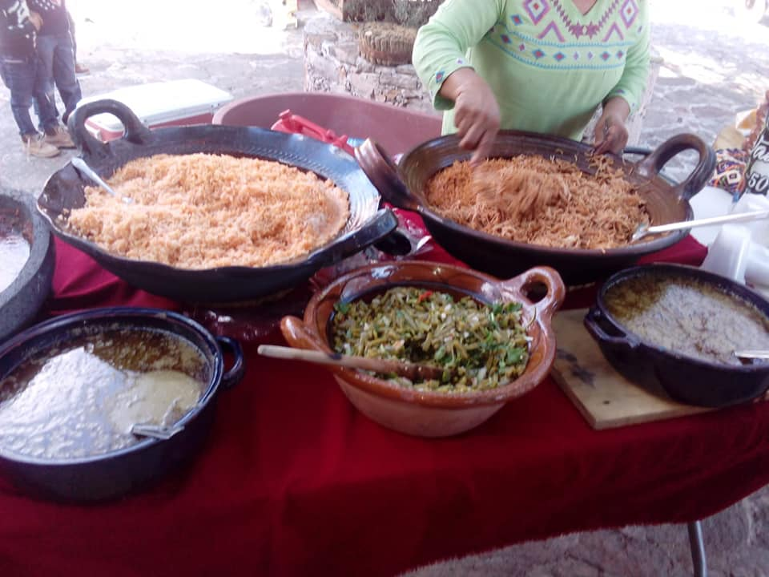

Cocina tradicional "Los Yugos"
En Los Yugos se cocina con alma y tradición. Aquí los guisos humean la historia del pueblo, y cada platillo honra los sabores del campo, las flores silvestres, como las del garambullo, el agave y la sábila, enriquecen cada bocado, estas recetas nacieron hace varias generaciones, por lo que más que comida, es una ofrenda de la memoria de los antepasados.
 

 


